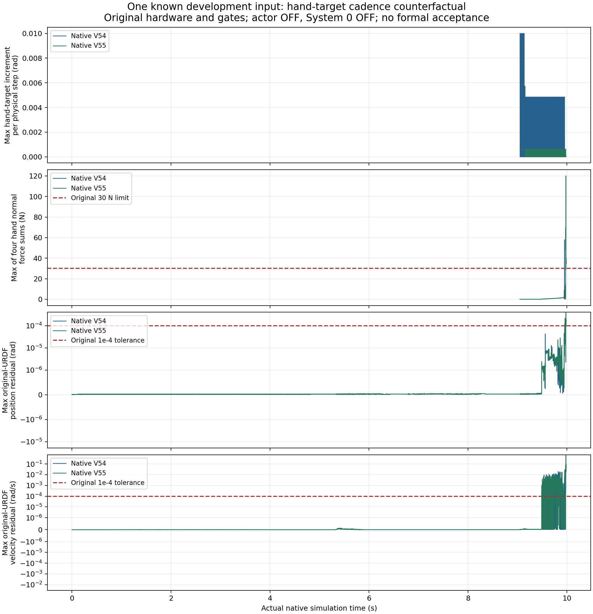

连续手指目标与真实夹持验收
这里展示真实原生开发对照的进展与失败。真实夹持、完整协作任务、标准资产及学习安全策略仍须联合验收。
同一条已知开发输入的两次运行，实验资产为2 FR3/F2 + 2 UR5/DFX；标准2 FR3 + 2 JAKA ZU7 + 4 RH56F2尚未通过资格验证。学习策略与System 0均关闭。两次运行不是两个独立随机样本，也不是System 0开关对照；反馈可能造成后续实际命令不同。
当前对照只改什么
V54的位置求解迭代从128降为32后，通过原接近、预整形和抓取稳定检查，进入闭合。闭合时出现57.931728 N接触峰值，超过原30 N上限；原位置和速度联动误差也超标。V55保留该求解配置，只把手指目标发送拆为每个物理步连续推进；原反馈规则和每秒目标变化上限保持。
机器人质量、惯量、转子惯量、摩擦、驱动和控制增益保持；机械臂输入仍有六控制周期延迟。位置与速度联动误差必须同时≤0.0001，单手物体接触力≤30 N；四手持续夹持≥0.25秒、100 mm抬升并稳定≥2秒，以及搬运、放置、释放、脱离退回均按原判据。
V53的接近停滞与逐轮float32位置更新的数值重放相符；该重放和未接触物体的低误差不能代替负载或任务资格。数值重放诊断 · 按原重力开关订正的逆动力学诊断 · 未受载资格拒绝
全部记录窗口与原门槛
| 版本 | 手指目标 | 控制 / 物理步 | 位置误差rad | 速度误差rad/s | 最大单手接触N | 物理门槛 | 持续四手接触秒 | 完整任务 |
|---|---|---|---|---|---|---|---|---|
| V54 | 控制周期起点发送手指目标 | 598 / 9568 | 0.000185966492 | 0.028346464 | 57.9317284 | 失败 | 0 | 未完成 |
| V55 | 逐物理步连续发送手指目标 | 599 / 9584 | 0.000382266939 | 0.686829746 | 120.017044 | 失败 | 0 | 未完成 |

V54：控制周期起点发送手指目标
接触、物理与任务核验 · 原始联动逐步核验 · 每个物理步的关节、目标、力与反馈记录 · 原始数据与视频索引
记录9.966268秒；视频尾帧的显示时长不计入额外物理采样。完整质量矩阵、9021对几何与82刚体点受力原始块保存在NAS，当前下载包含选定字段。
V55：逐物理步连续发送手指目标
接触、物理与任务核验 · 原始联动逐步核验 · 每个物理步的关节、目标、力与反馈记录 · 原始数据与视频索引
记录9.982934秒；视频尾帧的显示时长不计入额外物理采样。完整质量矩阵、9021对几何与82刚体点受力原始块保存在NAS，当前下载包含选定字段。
原九项联合验收
| 要求 | 原判据 | 状态 |
|---|---|---|
| 回退保持在原始非零速度和延迟下持续安全 | 所有128输入全部原生几何/接触/限位/速度通过完整480控制周期；正式独立集另验 | 联合未验收 |
| 保留操作意图并有实际四臂运动 | 冻结门槛：平均路径与各分层比例>=0.9、四臂运动比例>=0.9、全部26关节平均运动范围>=0.001rad；暂停非威胁臂继续和恢复及任务完成联合验收 | 联合未验收 |
| 强随机、大范围操作空间与定向危害覆盖 | 记录采样分布、全26DOF和速度支持、覆盖图、所有拒绝及分层；不得将筛选集当无条件全空间 | 联合未验收 |
| 科学规范的冻结协议、独立多种子、留出与不确定性报告 | 机制/判据冻结后使用至少两套独立新种子；全部登记窗口与失败保留；无结果后调参；报告最坏种子和适用统计上界 | 联合未验收 |
| 物体位置、姿态、大小、速度、可达性进入明确规划与安全输入 | 逐帧实际对象状态绑定、坐标/尺度校验、可达与拥挤判定、过时/缺失状态安全处理；视觉接口另独立校验 | 联合未验收 |
| 真实物理夹持、抬升、搬运、放置和释放 | 正式100mm抬升、>=2s稳定持物准入；摩擦接触驱动，无reset后物体写位姿、parenting或固定关节替代摩擦夹持；指定手接触和阶段成功联合判定 | 联合未验收 |
| 真实四臂共同任务且有安全与不安全的同输入对照 | 同一raw/S0外生命令初态对象资产；cross/self/table各危害；选择性暂停、另一臂移开、恢复、任务成功和零违规全部通过 | 联合未验收 |
| 完整原生观测和独立危害判据，无漏测或单看画面 | 9021球对与82碰撞刚体原生接触每个物理子步，全74关节/实际目标/FIFO、对象风险；非有限数据或分母缺失即拒绝 | 联合未验收 |
| 网页可审阅的安全对照、完整视角和证据归档 | 俯视/正视/侧视及需要的局部视角正确缩放，原生状态与视频绑定，暂停/恢复/任务侧车；主站链接、实际部署和公共字节回读通过 | 联合未验收 |
完整九项证据矩阵 · 单因素、全部77项参数与原判据核验 · 原生证据文件哈希 · 网页交付文件索引
这两次开发对照没有新增独立随机覆盖或正式留出验收。4万新随机提案仍未运行原生轨迹；完整50维可达/安全体积、物体布局与噪声/陈旧状态/故障分层，以及真正学习System 0的同输入安全对照仍待完成。